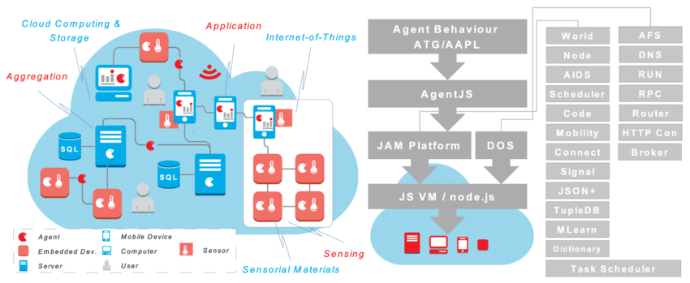

Hyperautomation brings together several components of process automation, integrating tools and technologies that amplify the ability to automate work. It starts with robotic process automation (RPA) at its core, and expands automation capability with artificial intelligence (AI), process mining, analytics, and other advanced tools. The idea is to automate more and more knowledge work, and engage everyone in an organization to be part of the transformation.
Hyperautomation unlocks maximum potential for an automated enterprise-Artificial intelligence capabilities such as machine learning (ML),natural language processing (NLP), intelligent optical character recognition(OCR),andAIcomputer vision,so robots can read, see,and process more work.
Workforce engagement capability: ways to enable everyone in an organization to contribute to automation. Involve not just the traditional RPA developers and testers, but also involve your subject matter experts, business analysts, and business users.
Automated process discovery tools that look deeply into how your teams work to show you what you can and should automate.
MXDPs serve to centralize life cycle activities — designing, developing, testing, distributing, managing and analyzing — for a portfolio of multiexperience apps. Multiexperience refers to the various permutations of modalities (e.g., touch, voice and gesture), devices and apps that users interact with on their digital journey across the various touchpoints. Multiexperience development involves creating fit-for-purpose apps based on touchpoint-specific modalities, while at the same time ensuring a consistent user experience across web, mobile, wearable, conversational and immersive touchpoints.
Multiexperience in Action
For a great example of multiexperience, we really have to look no further than the banking sector. The industry has traditionally been a sole brick-and-mortar business but, with the advent of the internet, organisations have been forced to open up online banking and account management services. Now? They’re doing so much more. Fast forward to today and nearly all banks have adopted mobile applications and a greater sense of digital connectivity. They are certainly Omnichannel in the strictest sense. But what about smart hubs? Will users want updates on their banking via voice command? This is just one example of where the financial sector is evolving – and where multiexperience is becoming more and more important. A key example that Gartner highlights is the Commonwealth Bank of Australia. Specifically, users can pay bills via chatbot, voice-activated ATMs, smartwatches, smartphones and, of course, via the bank’s website.
What Makes Multiexperience Consistent?
While your business should, of course, provide a different experience native to each device, there’s also an element of consistency. There are some factors related to your business that customers expect to find everywhere. This isn’t just the same data and progress on all platforms (that can be solved with a properly organised backend system). Companies also need to consider their branding and style – what people expect from their company and its services, specifically. Your UX should be consistent, so that when customers migrate from device to device, they don’t need to learn entirely new navigation – everything should feel instantly familiar.
Distributed cloud is the application of cloud computing technologies to interconnect data and applications served from multiple geographic locations. Distributed, in an information technology (IT) context, means that something is shared among multiple systems which may also be in different locations. Distributed cloud speeds communications for global services and enables more responsive communications for specific regions.
Cloud providers use the distributed model to enable lower latency and provide better performance for cloud services. Beyond the cloud provider context, two other examples of distributed cloud are public resource computing and the volunteer cloud. Public resource computing is a cross between cloud computing and distributed computing that involves computers in geographically dispersed locations connected to collaborate on compute-intensive and/or computer-intensive tasks. Some examples of this are Folding@home, BOINC and SETI@home. In a volunteer cloud, the resources of member computers are connected through a single service or hub to collaboratively construct and configure cloud infrastructure.
